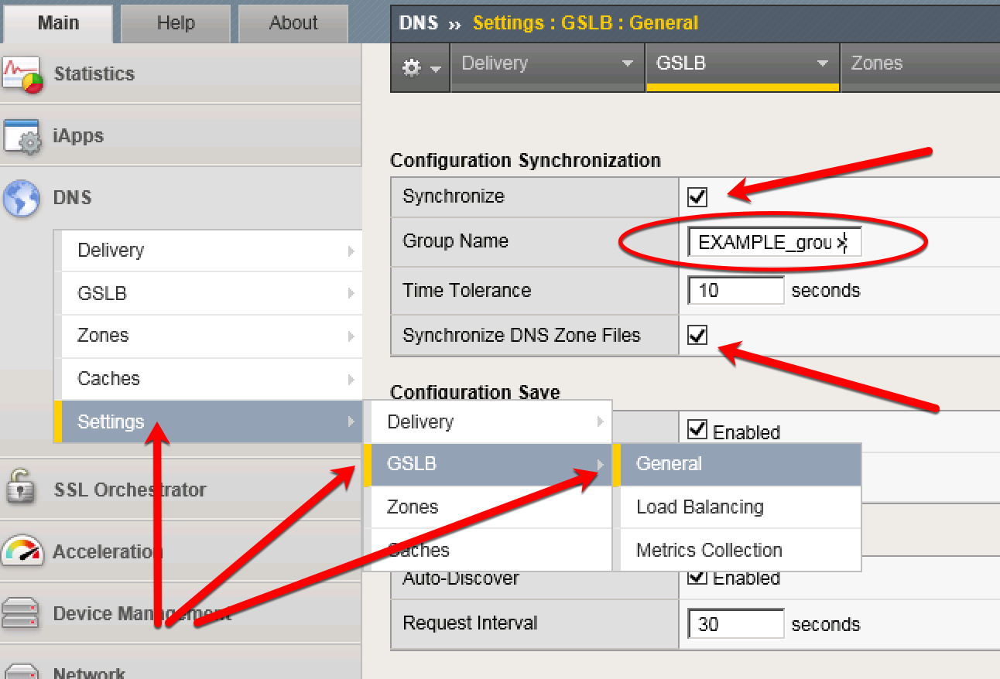

2.1. Settings¶
Configure the global settings for GSLB according to the following table:
Navigate to: DNS ›› Settings : GSLB : General
https://gtm1.site1.example.com/tmui/Control/jspmap/tmui/dns/settings/gslb/properties_general.jsp
| Setting | Value | Description |
|---|---|---|
| Synchronize | checked | Not on by default |
| Group Name | EXAMPLE_group | Org specific |
| Synchronize DNS Zone Files | checked | BIND zone file updates |

References
| [1] | https://support.f5.com/csp/article/K13734 |
| [2] | https://support.f5.com/kb/en-us/products/big-ip-dns/manuals/product/bigip-dns-implementations-12-0-0/4.html |